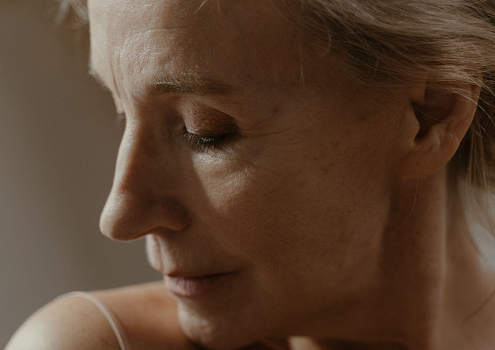
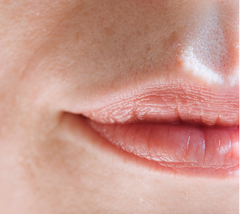
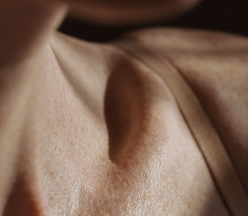
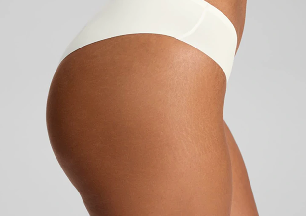
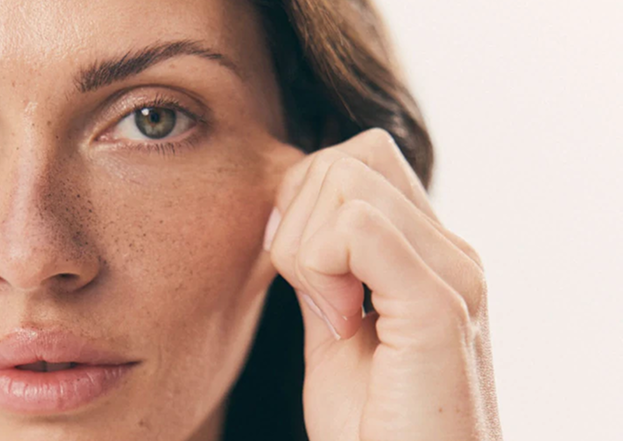
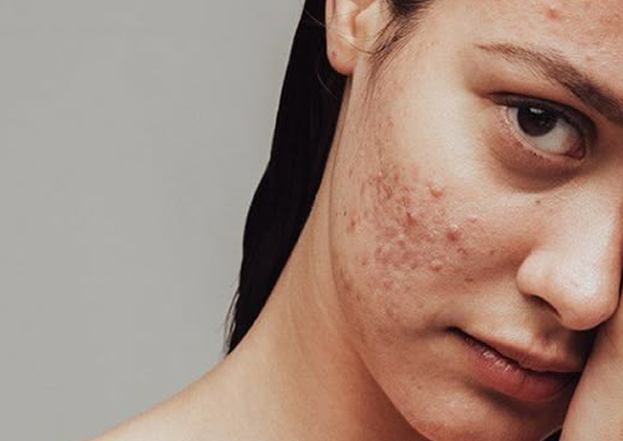
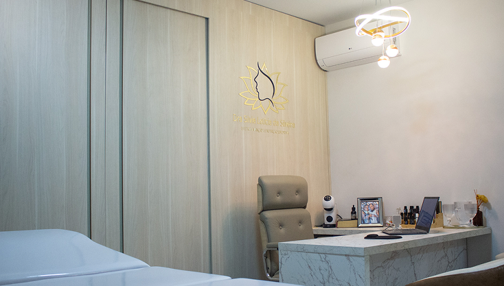
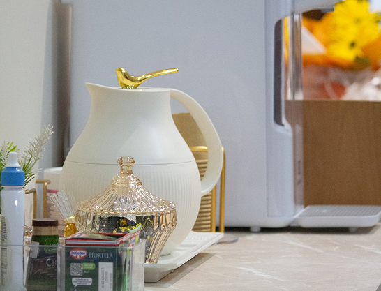
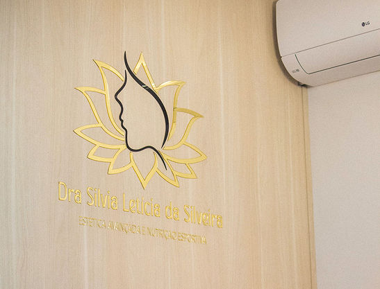
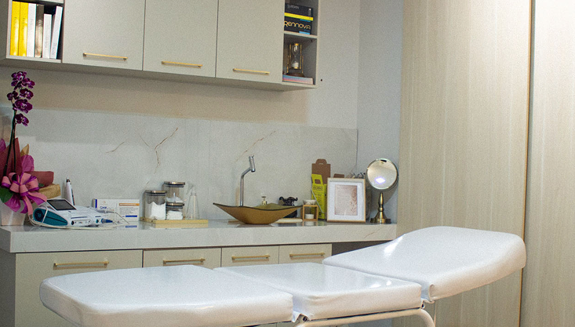

Toxina Botulínica
Suavização de rugas dinâmicas e linhas de expressão com aplicação precisa para manter a expressividade e naturalidade.
saiba maisTratamentos de estética regenerativa conduzidos por equipe multidisciplinar, unindo ciência, cuidado farmacêutico e nutricional para você envelhecer com naturalidade


Procedimentos personalizados com foco em saúde da pele, rejuvenescimento elegante e resultados sob medida para a sua beleza.

Suavização de rugas dinâmicas e linhas de expressão com aplicação precisa para manter a expressividade e naturalidade.
saiba mais
Uso de ácido hialurônico para restaurar volumes perdidos, definir contornos e harmonizar traços faciais com sofisticação.
saiba mais
Estímulo profundo da produção natural de colágeno para combater a flacidez e recuperar a firmeza e sustentação da pele.
saiba mais
Tratamentos combinados como peeling e microagulhamento para renovação celular, hidratação profunda e redução de manchas.
saiba maisProtocolos focados em gordura localizada, flacidez e celulite, sempre aliados a um planejamento metabólico individualizado.
saiba maisAcompanhamento integrado unindo o cuidado externo da pele ao suporte interno nutricional e farmacêutico personalizado.
saiba maisUm ambiente planejado para o seu bem estar, equipado com tecnologia de ponta e máxima segurança clínica




A Clínica SevenUp nasceu do desejo de proporcionar uma estética avançada fundamentada em bases científicas sólidas e segurança clínica.
Nossa equipe multidisciplinar atua de forma integrada para entregar tratamentos personalizados de alta qualidade.
Compreendemos que a verdadeira beleza reflete o equilíbrio entre o cuidado externo e a saúde interna.
Por isso, unimos a precisão do cuidado farmacêutico estético ao suporte nutricional especializado, criando planos de tratamento que geram rejuvenescimento natural e saúde duradoura.
“O que mais me encantou na SevenUp foi a clareza nas explicações e a naturalidade do resultado. Fiz a aplicação de botox e fiquei rejuvenescida, sem perder minhas expressões.”
“O atendimento integrado com a nutrição fez toda a diferença no meu tratamento corporal. Os resultados superaram as minhas expectativas e me sinto muito mais saudável.”
“Sempre tive medo de preenchimento facial, mas na clínica me explicaram tudo com embasamento técnico. O resultado ficou incrivelmente sutil e elegante. Recomendo muito!”
Insira seus dados abaixo. Nossa equipe entrará em contato para agendar o melhor dia e horário.
Confira as respostas para as principais dúvidas sobre os tratamentos e rotinas de nossa clínica.
A avaliação inicial entende seus objetivos e histórico para indicar um plano de cuidado personalizado.
Os procedimentos são geralmente bem tolerados e podem contar com recursos para maior conforto.
A durabilidade varia conforme organismo, produto, região tratada e rotina de cuidados.
São abordagens que estimulam respostas naturais da pele, como produção de colágeno e melhora progressiva da firmeza.
Porque os resultados estéticos também dependem de saúde interna, metabolismo e hábitos de cuidado.